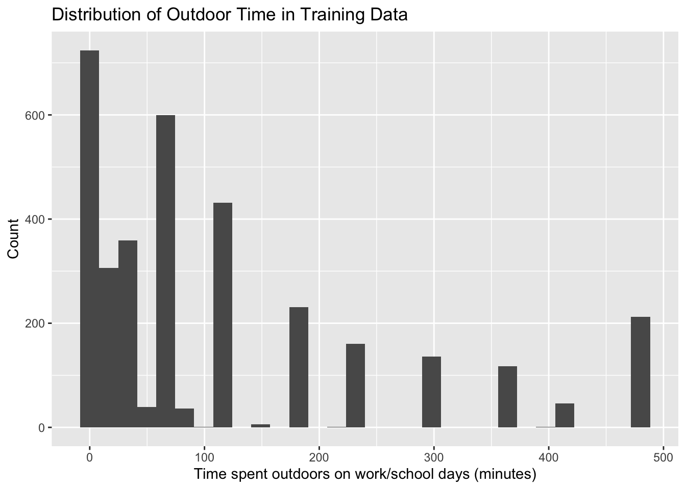
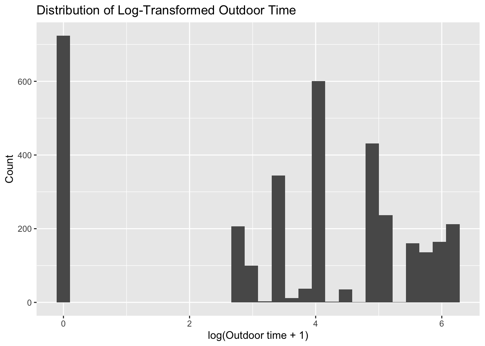
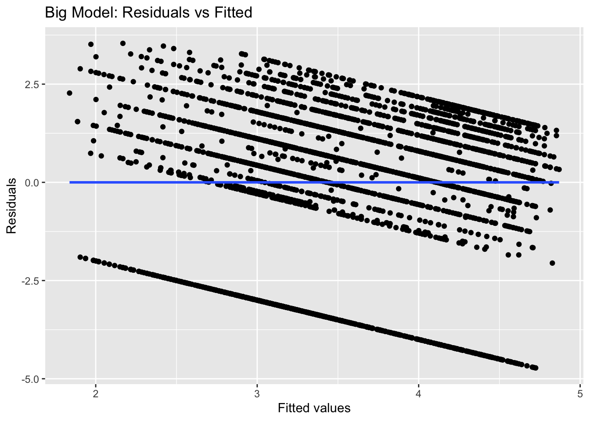
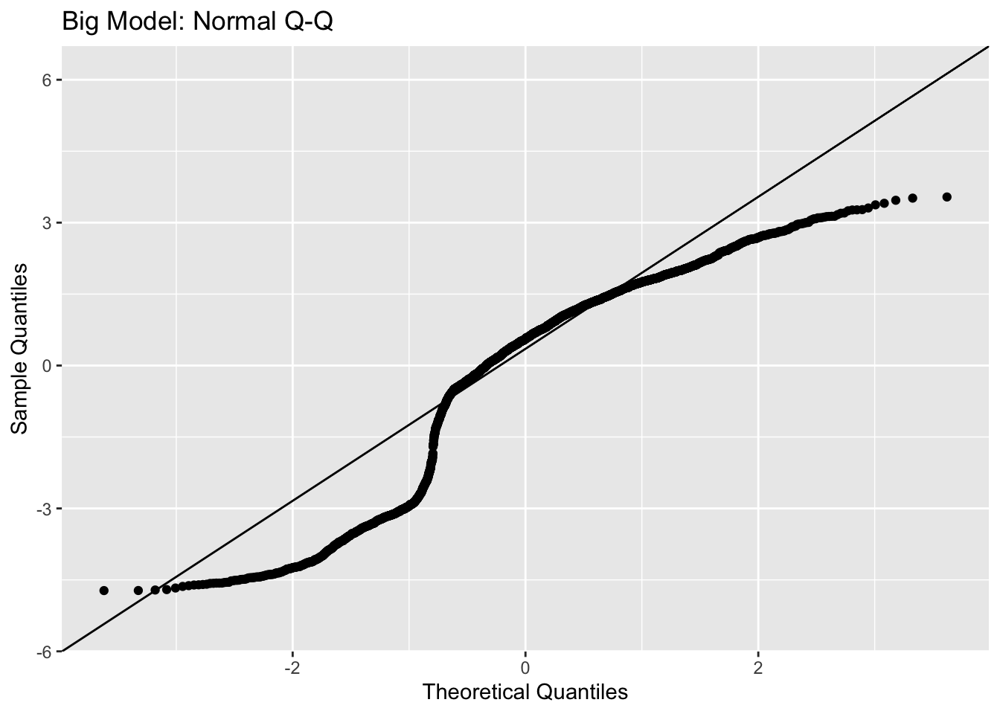
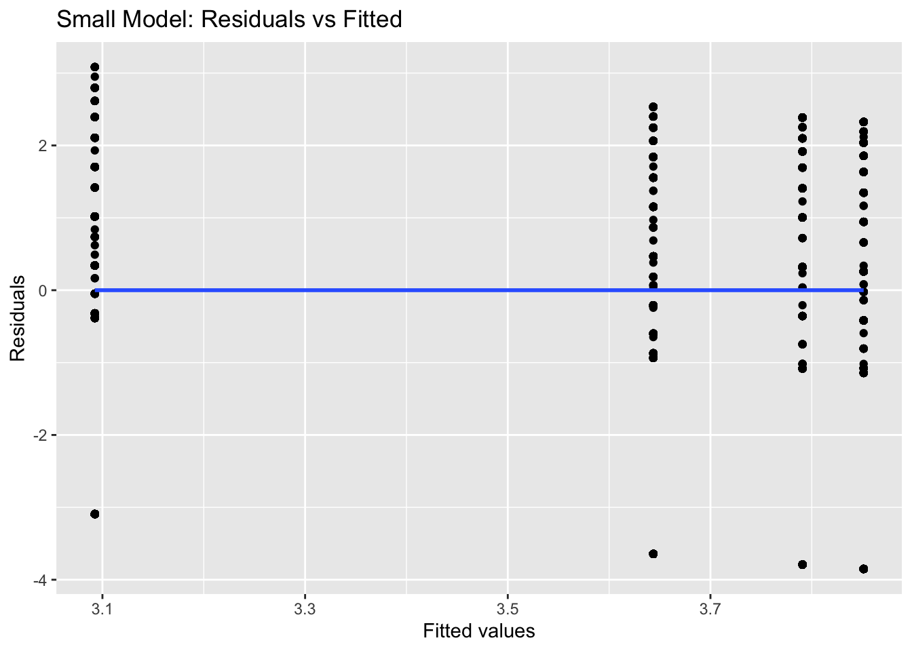
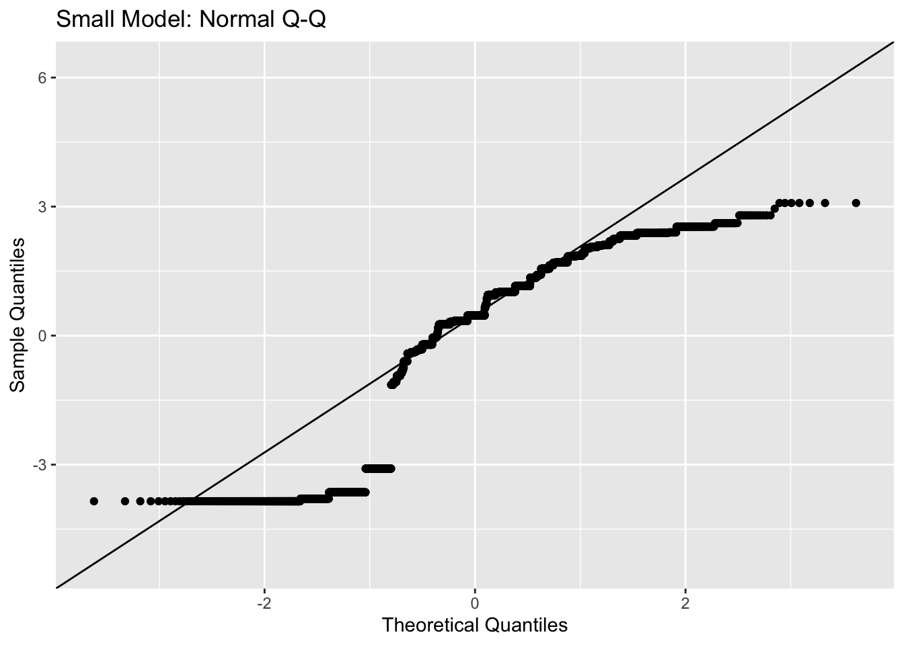
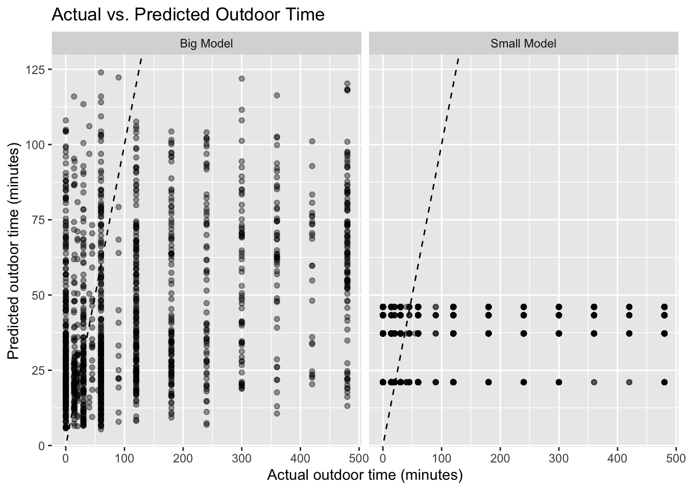

library(tidyverse)
library(haven)
library(janitor)
library(mice)
library(broom)
library(knitr)
library(patchwork)
library(naniar)
library(magrittr)
# Download/read raw datasets
demo_raw <- read_xpt("data/P_DEMO.xpt")
deq_raw <- read_xpt("data/P_DEQ.xpt")
# Select relevant variables
demo <- demo_raw %>%
select(
SEQN, RIDSTATR, RIDAGEYR,
RIAGENDR, RIDRETH3, DMDEDUC2
)
deq <- deq_raw %>%
select(
SEQN, DED120, DED125, DEQ034D
)
# Merge datasets
sun_raw <- demo %>%
left_join(deq, by = "SEQN")
# Restrict to adults ages 20-59 who completed the examination
sun <- sun_raw %>%
filter(
RIDSTATR == 2,
RIDAGEYR >= 20,
RIDAGEYR <= 59
)How well does education level predict the the time spent outdoors on work/school days among adults ages 20-59?
1 Setup and Data Ingest
2 Cleaning the Data
library(mice)
#Clean the data by replace any invalid responses (7,7777,9,9999,3333)
sun_clean <- sun %>%
mutate(
DMDEDUC2 = replace(
DMDEDUC2,
DMDEDUC2 %in% c(7, 9),
NA
),
DEQ034D = replace(
DEQ034D,
DEQ034D %in% c(7, 9),
NA
),
DED120 = replace(
DED120,
DED120 %in% c(3333, 7777, 9999),
NA
),
DED125 = replace(
DED125,
DED125 %in% c(3333, 7777, 9999),
NA
)
)
#Create useful categories
sun_clean <- sun_clean %>%
mutate(
gender = factor(
RIAGENDR,
levels = c(1, 2),
labels = c("Male", "Female")
),
race_ethnicity = factor(
RIDRETH3,
levels = c(1, 2, 3, 4, 6, 7),
labels = c(
"Mexican American",
"Other Hispanic",
"Non-Hispanic White",
"Non-Hispanic Black",
"Non-Hispanic Asian",
"Other Race - Including Multi-Racial"
)
),
education = case_when(
DMDEDUC2 %in% c(1, 2) ~ "Less than high school",
DMDEDUC2 == 3 ~ "High school or GED",
DMDEDUC2 == 4 ~ "Some college or AA",
DMDEDUC2 == 5 ~ "College graduate or above",
TRUE ~ NA_character_
),
education = factor(
education,
levels = c(
"Less than high school",
"High school or GED",
"Some college or AA",
"College graduate or above"
)
),
sunscreen = factor(
DEQ034D,
levels = c(1, 2, 3, 4, 5),
labels = c(
"Always",
"Most of the time",
"Sometimes",
"Rarely",
"Never"
)
),
regular_sunscreen = case_when(
DEQ034D %in% c(1, 2) ~ "Regular",
DEQ034D %in% c(3, 4, 5) ~ "Not Regular",
TRUE ~ NA_character_
),
regular_sunscreen = factor(
regular_sunscreen,
levels = c("Not Regular", "Regular")
)
)
sun_clean <- sun_clean %>%
rename(
outdoor_workday = DED120,
outdoor_nonworkday = DED125
)
study2 <- sun_clean %>%
select(
SEQN,
outdoor_workday,
education,
RIDAGEYR,
gender,
race_ethnicity,
regular_sunscreen
)
#Check dimension
dim(study2)[1] 5403 7#Summary and distinct variables check
study2 %>%
summarize(
across(
everything(),
~ sum(is.na(.))
)
) %>%
kable()| SEQN | outdoor_workday | education | RIDAGEYR | gender | race_ethnicity | regular_sunscreen |
|---|---|---|---|---|---|---|
| 0 | 535 | 2 | 0 | 0 | 0 | 23 |
n_distinct(study2$outdoor_workday, na.rm = TRUE)[1] 32study2 <- study2 %>%
filter(
!is.na(outdoor_workday),
!is.na(education)
)
dim(study2)[1] 4867 7study2 %>%
summarize(
across(everything(), ~ sum(is.na(.)))
) %>%
kable()| SEQN | outdoor_workday | education | RIDAGEYR | gender | race_ethnicity | regular_sunscreen |
|---|---|---|---|---|---|---|
| 0 | 0 | 0 | 0 | 0 | 0 | 17 |
study2_clean <- mice(
study2,
m = 1,
maxit = 5,
seed = 431,
printFlag = FALSE
)
study2_final <- complete(study2_clean)
dim(study2_final)[1] 4867 7study2_final %>%
summarize(
across(everything(), ~ sum(is.na(.)))
) %>%
pivot_longer(
everything(),
names_to = "Variable",
values_to = "Number Missing"
) %>%
kable(
caption = "Missing Values After Data Cleaning"
)| Variable | Number Missing |
|---|---|
| SEQN | 0 |
| outdoor_workday | 0 |
| education | 0 |
| RIDAGEYR | 0 |
| gender | 0 |
| race_ethnicity | 0 |
| regular_sunscreen | 0 |
3 Codebook and Data Description
3.1 Codebook
codebook <- tibble(
Variable = c(
"SEQN",
"outdoor_workday",
"education",
"RIDAGEYR",
"gender",
"race_ethnicity",
"regular_sunscreen"
),
Description = c(
"Participant ID",
"Time spent outdoors on work/school days (minutes)",
"Highest education level",
"Age in years",
"Gender",
"Race/ethnicity",
"Regular sunscreen use"
),
Role = c(
"ID",
"Outcome",
"Key predictor",
"Predictor",
"Predictor",
"Predictor",
"Predictor"
)
)
codebook %>%
kable(
caption = "Codebook for Study 2 Analytic Variables"
)| Variable | Description | Role |
|---|---|---|
| SEQN | Participant ID | ID |
| outdoor_workday | Time spent outdoors on work/school days (minutes) | Outcome |
| education | Highest education level | Key predictor |
| RIDAGEYR | Age in years | Predictor |
| gender | Gender | Predictor |
| race_ethnicity | Race/ethnicity | Predictor |
| regular_sunscreen | Regular sunscreen use | Predictor |
3.2 Analytic Tibble
#Tibble
study2_final %>%
slice_head(n = 10) %>%
kable(
caption = "First 10 Observations of the Study 2 Analytic Dataset"
)| SEQN | outdoor_workday | education | RIDAGEYR | gender | race_ethnicity | regular_sunscreen |
|---|---|---|---|---|---|---|
| 109266 | 30 | College graduate or above | 29 | Female | Non-Hispanic Asian | Not Regular |
| 109273 | 360 | Some college or AA | 36 | Male | Non-Hispanic White | Not Regular |
| 109284 | 240 | Less than high school | 44 | Female | Mexican American | Regular |
| 109286 | 60 | College graduate or above | 33 | Female | Non-Hispanic Asian | Regular |
| 109291 | 120 | College graduate or above | 42 | Female | Non-Hispanic Asian | Not Regular |
| 109292 | 0 | High school or GED | 58 | Male | Other Hispanic | Not Regular |
| 109293 | 120 | High school or GED | 44 | Male | Non-Hispanic White | Not Regular |
| 109295 | 0 | Less than high school | 54 | Female | Mexican American | Not Regular |
| 109297 | 0 | Some college or AA | 30 | Female | Non-Hispanic Asian | Not Regular |
| 109300 | 30 | College graduate or above | 54 | Female | Non-Hispanic Asian | Not Regular |
3.3 Numeric Description
#Data summary
numeric_summary <- tibble(
Variable = c("Outdoor time (minutes)", "Age (years)"),
Mean = c(
mean(study2_final$outdoor_workday),
mean(study2_final$RIDAGEYR)
),
SD = c(
sd(study2_final$outdoor_workday),
sd(study2_final$RIDAGEYR)
),
Median = c(
median(study2_final$outdoor_workday),
median(study2_final$RIDAGEYR)
),
Min = c(
min(study2_final$outdoor_workday),
min(study2_final$RIDAGEYR)
),
Max = c(
max(study2_final$outdoor_workday),
max(study2_final$RIDAGEYR)
)
)
numeric_summary %>%
kable(
digits = 1,
caption = "Summary of Numeric Variables"
)| Variable | Mean | SD | Median | Min | Max |
|---|---|---|---|---|---|
| Outdoor time (minutes) | 117.5 | 139.8 | 60 | 0 | 480 |
| Age (years) | 39.6 | 11.5 | 40 | 20 | 59 |
4 My Research Question
How well does education level predict time spent outdoors on work/school days among adults ages 20–59 after accounting for age, gender, race/ethnicity, and regular sunscreen use?
Key predictor will be education. The quantitative outcome would be outdoor_workday (time spent outdoors on work/school days). Additional predictors are age, gender, race/ ethnicity, and regular_sunscreen (regular sunscreen use).
5 Partitioning the Data
#Partition the data (train and test)
set.seed(431)
study2_train <- study2_final %>%
slice_sample(prop = 0.70)
study2_test <- study2_final %>%
anti_join(study2_train, by = "SEQN")
#Check size for 70/30
nrow(study2_train)[1] 3406nrow(study2_test)[1] 1461#Verify that no one is in both training and test sets at the same time
partition_check <- tibble(
Dataset = c("Full analytic sample", "Training", "Test"),
n = c(
nrow(study2_final),
nrow(study2_train),
nrow(study2_test)
)
)
partition_check %>%
kable(
caption = "Study 2 Training and Test Sample Sizes"
)| Dataset | n |
|---|---|
| Full analytic sample | 4867 |
| Training | 3406 |
| Test | 1461 |
# Check that no participant appears in both datasets
intersect(
study2_train$SEQN,
study2_test$SEQN
)numeric(0)6 Transforming the Outcome
#Plot
ggplot(study2_train, aes(x = outdoor_workday)) +
geom_histogram(bins = 30) +
labs(
title = "Distribution of Outdoor Time in Training Data",
x = "Time spent outdoors on work/school days (minutes)",
y = "Count"
)
#Summary
study2_train %>%
summarize(
mean = mean(outdoor_workday),
sd = sd(outdoor_workday),
median = median(outdoor_workday),
min = min(outdoor_workday),
max = max(outdoor_workday)
) %>%
kable(digits = 1)| mean | sd | median | min | max |
|---|---|---|---|---|
| 115.7 | 138.1 | 60 | 0 | 480 |
#Log transformation is used because the data is skewed to the right, so linear transformation would not work. The log calculations will compress the big datapoints while the effect is minimal on small datapoints, so overall it should somewhat account for the dramatic skew.
#Log transformation
study2_train <- study2_train %>%
mutate(
log_outdoor_workday = log(outdoor_workday + 1)
)
study2_test <- study2_test %>%
mutate(
log_outdoor_workday = log(outdoor_workday + 1)
)
#Plot the log distribution
ggplot(study2_train, aes(x = log_outdoor_workday)) +
geom_histogram(bins = 30) +
labs(
title = "Distribution of Log-Transformed Outdoor Time",
x = "log(Outdoor time + 1)",
y = "Count"
) 
#This log calculation produces a large portion for 0 since log (0+1) = 0 for people that reported outdoor_workday = 0. Otherwise, the distribution for other time interval looks better, though the distribution is still not normal. The improvement is a sign to proceed with the model fitting.7 The Big Model
#The Big Model uses log transformation to predict the outdoor time on work/school days as the the outcome, including additional predictors such as education, age, gender, race/ethnicity, and regular sunscreen use.
#Big Model
big_model <- lm(
log_outdoor_workday ~ education + RIDAGEYR + gender +
race_ethnicity + regular_sunscreen,
data = study2_train
)
# Coefficient summary
tidy(big_model, conf.int = TRUE) %>%
kable(
digits = 3,
caption = "Coefficient Estimates for the Big Model"
)| term | estimate | std.error | statistic | p.value | conf.low | conf.high |
|---|---|---|---|---|---|---|
| (Intercept) | 4.849 | 0.165 | 29.351 | 0.000 | 4.525 | 5.173 |
| educationHigh school or GED | -0.075 | 0.115 | -0.651 | 0.515 | -0.300 | 0.150 |
| educationSome college or AA | -0.178 | 0.110 | -1.620 | 0.105 | -0.394 | 0.037 |
| educationCollege graduate or above | -0.574 | 0.117 | -4.920 | 0.000 | -0.802 | -0.345 |
| RIDAGEYR | -0.017 | 0.003 | -5.644 | 0.000 | -0.022 | -0.011 |
| genderFemale | -0.980 | 0.069 | -14.160 | 0.000 | -1.116 | -0.845 |
| race_ethnicityOther Hispanic | 0.061 | 0.140 | 0.438 | 0.661 | -0.213 | 0.336 |
| race_ethnicityNon-Hispanic White | 0.260 | 0.115 | 2.268 | 0.023 | 0.035 | 0.485 |
| race_ethnicityNon-Hispanic Black | 0.296 | 0.117 | 2.536 | 0.011 | 0.067 | 0.525 |
| race_ethnicityNon-Hispanic Asian | -0.368 | 0.135 | -2.733 | 0.006 | -0.632 | -0.104 |
| race_ethnicityOther Race - Including Multi-Racial | 0.401 | 0.172 | 2.325 | 0.020 | 0.063 | 0.739 |
| regular_sunscreenRegular | -0.114 | 0.090 | -1.270 | 0.204 | -0.290 | 0.062 |
8 The Small Model
#Small Model uses the same log transformation to calculate the outdoor time on work/school days as the outcome, but it only uses education as the key predictor.
#Small Model
small_model <- lm(
log_outdoor_workday ~ education,
data = study2_train
)
# Coefficient summary
tidy(small_model, conf.int = TRUE) %>%
kable(
digits = 3,
caption = "Coefficient Estimates for the Smaller Model"
)| term | estimate | std.error | statistic | p.value | conf.low | conf.high |
|---|---|---|---|---|---|---|
| (Intercept) | 3.791 | 0.092 | 41.236 | 0.000 | 3.611 | 3.971 |
| educationHigh school or GED | 0.060 | 0.117 | 0.518 | 0.605 | -0.168 | 0.289 |
| educationSome college or AA | -0.147 | 0.110 | -1.341 | 0.180 | -0.362 | 0.068 |
| educationCollege graduate or above | -0.698 | 0.113 | -6.168 | 0.000 | -0.920 | -0.476 |
9 In-Sample Comparison
9.1 Quality of Fit
#Evaluation/Comparision of the two models using R squared, AIC, and BIC
big_fit <- glance(big_model) %>%
select(r.squared, adj.r.squared, AIC, BIC) %>%
mutate(Model = "Big Model")
small_fit <- glance(small_model) %>%
select(r.squared, adj.r.squared, AIC, BIC) %>%
mutate(Model = "Smaller Model")
bind_rows(big_fit, small_fit) %>%
select(Model, everything()) %>%
kable(
digits = 3,
caption = "In-Sample Model Fit Comparison"
)| Model | r.squared | adj.r.squared | AIC | BIC |
|---|---|---|---|---|
| Big Model | 0.101 | 0.098 | 14254.58 | 14334.32 |
| Smaller Model | 0.022 | 0.021 | 14525.42 | 14556.08 |
The R squared value is higher for the Big model, indicating that the model has a better fit compared to the Small model, though it only accounts for about 10% of the variation. Nonetheles, the AIC and BIC results for the Big model are smaller. Overall, so far, the Big model seems to be a stronger model.
9.2 Assessing Assumptions
#Check Regression Assumptions using Residual and Normal Q-Q plots for the Big model and Small model
#Big Model
big_aug <- augment(big_model)
# Residuals vs Fitted
ggplot(big_aug, aes(x = .fitted, y = .resid)) +
geom_point() +
geom_smooth(
method = "lm",
se = FALSE
) +
labs(
title = "Big Model: Residuals vs Fitted",
x = "Fitted values",
y = "Residuals"
)
# Normal Q-Q plot
ggplot(big_aug, aes(sample = .resid)) +
stat_qq() +
stat_qq_line() +
labs(
title = "Big Model: Normal Q-Q",
x = "Theoretical Quantiles",
y = "Sample Quantiles"
)
#Small Model
small_aug <- augment(small_model)
# Residuals vs Fitted
ggplot(small_aug, aes(x = .fitted, y = .resid)) +
geom_point() +
geom_smooth(
method = "loess",
se = FALSE
) +
labs(
title = "Small Model: Residuals vs Fitted",
x = "Fitted values",
y = "Residuals"
)
# Normal Q-Q plot
ggplot(small_aug, aes(sample = .resid)) +
stat_qq() +
stat_qq_line() +
labs(
title = "Small Model: Normal Q-Q",
x = "Theoretical Quantiles",
y = "Sample Quantiles"
)
9.3 Comparing the Model
The results are very different for the Big model and the Small model.
The Big Model has higher R squared and adjusted R squared values, which means that it explains more of the variation in the outdoor time in the training data.
It’s very interesting how the Residuals for the Big model are somewhat in a diagonal position, and it does not agree with the fitted values. The values starting at around -2 seem somewhat out of the normal range. The Residuals for the Small model have substainable spread and do not align well with the fitted line. The regression residuals only partially follow the normal distribution, as showed in the Normal Q-Q plot in the Big model. The same observation can be made with the Small model: Normal Q-Q plot. While these results are not ideal, we should still proceed with the predictions to see if we could get a different result.
10 Model Validation
10.1 Calculating Prediction Errors
# Big Model predictions on test data
big_test <- study2_test %>%
mutate(
predicted_log = predict(big_model, newdata = study2_test),
predicted_minutes = exp(predicted_log) - 1,
prediction_error = outdoor_workday - predicted_minutes
)
# Small Model predictions on original scale
small_test <- study2_test %>%
mutate(
predicted_log = predict(small_model, newdata = study2_test),
predicted_minutes = exp(predicted_log) - 1,
prediction_error = outdoor_workday - predicted_minutes
)10.2 Visualizing the Predictions
#Actual vs Predicted Plot
prediction_plot <- bind_rows(
big_test %>%
select(outdoor_workday, predicted_minutes) %>%
mutate(Model = "Big Model"),
small_test %>%
select(outdoor_workday, predicted_minutes) %>%
mutate(Model = "Small Model")
)
ggplot(
prediction_plot,
aes(x = outdoor_workday, y = predicted_minutes)
) +
geom_point(alpha = 0.4) +
geom_abline(
intercept = 0,
slope = 1,
linetype = "dashed"
) +
facet_wrap(~ Model) +
labs(
title = "Actual vs. Predicted Outdoor Time",
x = "Actual outdoor time (minutes)",
y = "Predicted outdoor time (minutes)"
)
10.3 Summarizing the Errors
# Big Model test performance
big_validation <- big_test %>%
summarize(
RMSPE = sqrt(mean(prediction_error^2)),
MAPE = mean(abs(prediction_error)),
MAE = max(abs(prediction_error)),
validated_R2 = cor(outdoor_workday, predicted_minutes)^2
)
# Small Model test performance
small_validation <- small_test %>%
summarize(
RMSPE = sqrt(mean(prediction_error^2)),
MAPE = mean(abs(prediction_error)),
MAE = max(abs(prediction_error)),
validated_R2 = cor(outdoor_workday, predicted_minutes)^2
)
#Clean table
bind_rows(
Big_Model = big_validation,
Small_Model = small_validation,
.id = "Model"
) %>%
kable(
digits = 3,
caption = "Model Performance on the Test Data"
)| Model | RMSPE | MAPE | MAE | validated_R2 |
|---|---|---|---|---|
| Big_Model | 157.152 | 100.461 | 466.855 | 0.138 |
| Small_Model | 165.532 | 104.731 | 458.968 | 0.046 |
10.4 Comparing the Models
The Big Model has a lower RMSPE (157 minutes) and MAE (100 minutes) compared to the Small Model (165 and 104 minutes, respectively). The Big Model also has a higher R square value (0.138 vs 0.046), which means its predictions are closer to the actual outdoor time values. Overall, the Big Model shows better predictive performance, though the prediction errors are still significant in both models.
11 Discussion
11.1 Chosen Model
I choose the Big Model because it shows better results on almost all of the validation tests, including higher R squared values, low AIC and BIC values, than the Small Model. In addition, its prediction errors (RMSPE and MAE) are also smaller than those for the Small Model. However, it still has significant limitations since the error values are relatively large.
11.2 Answering My Question
While education as a predictor alone is proven inefficient to predict the outdoor time on work/school days, adding multiple predictors seem to only improve the outcome to a certain extent. We can see that the predicted outdoor time has much variations with the Big Model.
Looking at the coefficient tables of the Big Model, education is related to outdoor time mainly for college graduates. Participants with high school and some college education do not have a statistically significant difference in otudoor time compared to those with less than high school education. However, college graduates and above tend to spend less time outdoors than those with less than a high school education. This is a significant difference (p<0.001), taking into account for age, gender, race, and regular sunscreen use.
11.3 Next Steps
I think the next steps should be looking at other predictors such as occupation or work schedule. In addition, other regression models could be explored since the log transformation did not fully account for the large prediction errors at the end.
11.4 Reflection
It’s important to evaluate a model using both the training and testing data. We see that even though the Big Model surpasses the Small Model on most measurements (R squared, AIC, BIC results, etc.), the plots tell us that the improved performance of the Big Model still has significant variations from the actual values. Thus, adding more predictors might actually have complicated the performance of the model, even after showing some initial potential.
11.5 Final Section
xfun::session_info()R version 4.6.1 (2026-06-24)
Platform: aarch64-apple-darwin23
Running under: macOS Tahoe 26.6.2
Locale: en_US.UTF-8 / en_US.UTF-8 / en_US.UTF-8 / C / en_US.UTF-8 / en_US.UTF-8
Package version:
askpass_1.2.1 backports_1.5.1 base64enc_0.1.6
bit_4.6.0 bit64_4.8.6 blob_1.3.0
boot_1.3-32 broom_1.0.13 bslib_0.12.0
cachem_1.1.0 callr_3.8.0 cellranger_1.1.0
cli_3.6.6 clipr_0.8.1 codetools_0.2-20
compiler_4.6.1 conflicted_1.2.0 cpp11_0.5.5
crayon_1.5.3 curl_8.0.0 data.table_1.18.6.1
DBI_1.3.0 dbplyr_2.6.0 digest_0.6.39
dplyr_1.2.1 dtplyr_1.3.3 evaluate_1.0.5
farver_2.1.2 fastmap_1.2.0 fontawesome_0.5.3
forcats_1.0.1 foreach_1.5.2 fs_2.1.0
gargle_1.6.1 generics_0.1.4 ggplot2_4.0.3
glmnet_5.1 glue_1.8.1 googledrive_2.1.2
googlesheets4_1.1.2 graphics_4.6.1 grDevices_4.6.1
grid_4.6.1 gridExtra_2.3.1 gtable_0.3.6
haven_2.5.5 highr_0.12 hms_1.1.4
htmltools_0.5.9 htmlwidgets_1.6.4 httr_1.4.8
ids_1.0.1 isoband_0.3.0 iterators_1.0.14
janitor_2.2.1 jomo_2.7-6 jquerylib_0.1.4
jsonlite_2.0.0 knitr_1.52 labeling_0.4.3
lattice_0.22-9 lifecycle_1.0.5 lme4_2.0-6
lubridate_1.9.5 magrittr_2.0.5 MASS_7.3-65
Matrix_1.7-5 memoise_2.0.1 methods_4.6.1
mgcv_1.9-4 mice_3.19.0 mime_0.13
minqa_1.2.8 mitml_0.4-5 modelr_0.1.11
naniar_1.1.0 nlme_3.1-169 nloptr_2.2.1
nnet_7.3-20 norm_1.0.11.1 numDeriv_2016.8.1.1
openssl_2.4.2 ordinal_2026.7.26 otel_0.2.0
pan_2.0 parallel_4.6.1 patchwork_1.3.2
pillar_1.11.1 pkgconfig_2.0.3 plyr_1.8.9
prettyunits_1.2.0 processx_3.9.0 progress_1.2.3
ps_1.9.3 purrr_1.2.2 R6_2.6.1
ragg_1.5.2 rappdirs_0.3.4 rbibutils_2.4.1
RColorBrewer_1.1-3 Rcpp_1.1.2 RcppEigen_0.3.4.0.2
Rdpack_2.6.6 readr_2.2.0 readxl_1.5.0
reformulas_0.4.4 rematch_2.0.0 rematch2_2.1.2
reprex_2.1.1 rlang_1.3.0 rmarkdown_2.31
rpart_4.1.27 rstudioapi_0.19.0 rvest_1.0.5
S7_0.2.2 sass_0.4.10 scales_1.4.0
selectr_0.6.0 shape_1.4.6.1 snakecase_0.11.1
splines_4.6.1 stats_4.6.1 stats4_4.6.1
stringi_1.8.9 stringr_1.6.0 survival_3.8-6
sys_3.4.3 systemfonts_1.3.2 textshaping_1.0.5
tibble_3.3.1 tidyr_1.3.2 tidyselect_1.2.1
tidyverse_2.0.0 timechange_0.4.0 tinytex_0.60
tools_4.6.1 tzdb_0.5.0 ucminf_1.2.3
UpSetR_1.4.1 utf8_1.2.6 utils_4.6.1
uuid_1.2.2 vctrs_0.7.3 viridis_0.6.5
viridisLite_0.4.3 visdat_0.6.1 vroom_1.7.1
withr_3.0.3 xfun_0.61 xml2_1.6.0
yaml_2.3.12